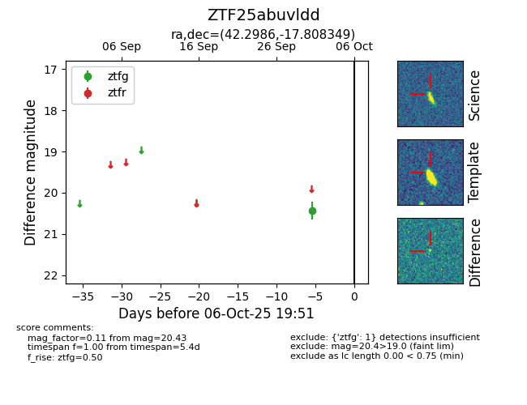

FINK: ZTF25abuvldd
Lasair: ZTF25abuvldd
ALeRCE: ZTF25abuvldd
ZTF25abuvldd (ztf,fink)
equatorial (ra, dec) = (42.2986,-17.80835)
galactic (l, b) = (200.1814,-61.32901)

last ztfg=20.43
1 ztfg detections